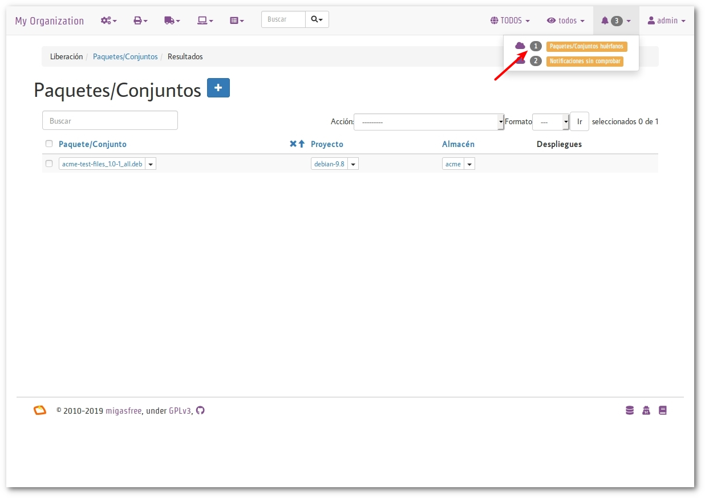

Configurando software al estilo migasfree
Configurando software al estilo migasfree¶
No esperes hasta que las condiciones sean perfectas para comenzar, el empezar hace las condiciones perfectas.
-- Alan Cohen.
El objetivo de este capítulo es que veas todo el proceso de la Gestión de la Configuración Software en conjunto. Lo vamos a hacer desplegando un paquete que, simplemente, instalará unos ficheros de ejemplo (png, gif, mp4, etc.) que pueden servir al personal del Centro de Asistencia Usuarios (CAU) para comprobar las asociaciones de archivos y aplicaciones.
Al estilo tradicional¶
Imagina que te llega una petición de cambio para añadir en todos los ordenadores de escritorio de tu organización unos determinados ficheros de test para facilitar el trabajo de los compañeros del CAU.
Como aún no has pensado cómo desplegar software en los escritorios GNU/Linux, decides acceder uno a uno a los equipos por SSH y copiarlos manualmente. Tardas unos días pero al final realizas el trabajo justo antes de cogerte las vacaciones de verano, a excepción de algunos equipos que estaban apagados y que no has podido acceder remotamente.
Ahora bien, mientras estás de vaciones, ¿podría responder fácilmente a las cuestiones siguientes tu compañero de trabajo?
- ¿Qué cambios se han realizado en un determinado equipo desde el 1 de Marzo?
- ¿Quién realizó el cambio?
- ¿Cúando se desplegaron todos esos cambios en los equipos?
- ¿Qué equipos tienen un cambio determinado?
Difícilmente tu compañero va a poder reponder estas cuestiones de manera eficaz, aunque hayas registrado muy bien tu trabajo.
Podrías haberte ahorrado mucho trabajo usando herramientas como cengine, puppet, chef, etc., para el despliegue de estos ficheros, pero aún así no podrías contestar fácilmente a dichas preguntas.
La integridad frente al cambio no está garantizada con este método.
A continuación, te propongo otra forma de realizar los cambios de configuración. Se basa en utilizar el empaquetado para trasladar los cambios a los equipos.
nota
Usa la rueda, no la reinventes. Usando el sistema de paquetería para desplegar el software y su configuración, nos proporciona integridad frente a los cambios. Cualquier distribución GNU/Linux tiene un gestor de paquetes y hace muy bien su trabajo.
Asumo que tienes un gestor de proyectos, como Redmine, donde vas a registrar las peticiones de cambio (o al menos que hagas como que lo tienes) y que has completado con éxito el capítulo anterior. Todos los comandos de este capítulo los vas a ejecutar como root en el equipo que hayas utilizado en el capítulo anterior.
Tu primer cambio de configuración¶
El primer cambio sobre un Elemento de Configuración Software (ECS) es el que te llevará más trabajo, porque exige la creación de un paquete.
Petición¶
Imagina que te llega la siguiente la petición de cambio, que registras y aceptas en el gestor de proyectos:
gestor de proyectos
Registro: Copiar distintos ficheros de ejemplos: png, gif, jpg, etc., en todos los ordenadores para uso y disfrute de los compañeros del CAU.
Lo primero que haces es identificar al ECS que afecta, es decir, cuál es el paquete que debe ser modificado. Como no existe todavía un paquete sobre el que actuar, asigna la petición de cambio a un desarrollador (¡qué suerte, siempre te toca a ti!) y registra en la petición de cambio:
gestor de proyectos
Registro: Crear el paquete acme-test-files
Asignado a: desarrollador.
Cambio¶
Empaquetado¶
Como desarrollador, tienes que crear el paquete de configuración
acme-test-files. Si nunca has creado un paquete, no te preocupes, para
facilitarte las cosas y que puedas avanzar, centrándote en el proceso
GCS, descárgate el proyecto fun-with-migasfree-examples donde se
incluyen los ejemplos utilizados es este libro.
# apt-get install unzip
$ wget https://github.com/migasfree/fun-with-migasfree-examples/archive/master.zip
$ unzip master.zip
$ cd fun-with-migasfree-examples-master
Observa los ficheros que incluimos en el paquete acme-test-files:
$ ll acme-test-files/usr/share/acme-test-files/
Ya tienes el fuente del paquete. Ahora genera el paquete. Para ello, debes tener instalados algunos paquetes:
# apt-get install devscripts gcc build-essential:native
Y, ahora sí, genera el paquete:
$ cd acme-test-files
$ /usr/bin/debuild --no-tgz-check -us -uc
$ cd ..
¡Felicidades, el cambio está empaquetado en
acme-test-files_1.0-1_all.deb!
Subiendo el cambio al servidor¶
Usa este comando para subir el paquete generado al servidor.
# migasfree-upload -f acme-test-files_1.0-1_all.deb
- Introduce usuario: admin
- Contraseña: admin
- Proyecto: debian-x.x (En mi caso la versión es debian-9.8)
- Almacén: acme
Finalmente, asigna la petición de cambio a un liberador (sí, otra vez vas a ser tú) y registra en la petición:
gestor de proyectos
Registro: Creado paquete acme-test-files_1.0-1_all.deb
Asignado a: liberador
¡Felicidades! Has realizado un cambio de configuración y lo has almacenado en el servidor migasfree.
Liberación¶
Ahora vas a ver el punto de vista del encargado de liberar los cambios:
Accede mediante un navegador web a tu servidor. Observa que en Alertas
tienes 1 paquete huérfano (ver imagen 'Paquetes huérfanos').
 Paquetes huérfanos
Nota
Todos los paquetes que se han subido al servidor y no están asignados en
ningún despliegue se denominan huérfanos.
Liberando el cambio de configuración¶
Ahora, vas a liberar el cambio creando un nuevo despliegue.
Para ello, ve a Liberación (pulsando sobre el icono del camión) y
accede a Despliegues. Pulsa en el botón + para
añadir un nuevo despliegue de origen interno e introduce estos datos:
Nota
Coloca el cursor sobre los iconos para familializarte con el nombre de los campos del formulario.
- Nombre =
ficheros de ejemplo #24543(Una buena idea es hacer aquí una referencia al nº de petición del Gestor de proyectos) - Proyecto =
debian-x.x -
Paquetes disponibles =
acme-test-files_1.0-1_all.debEn este campo se asignan los paquetes que contendrá el repositorio físico asociado al despliegue.
-
Paquetes a instalar =
acme-test-filesEn este campo se escriben los nombres de los paquetes que se instalarán obligatoriamente en los clientes.
-
Atributos incluidos =
SET-ALL SYSTEMSDe esta manera indicamos que todos los clientes tendrán acceso a este despliegue.
Guarda el despliegue.
Observa que, en Alertas, ya no tienes ningún paquete huérfano.
Registra y cierra la petición de cambio:
gestor de proyectos
Registro: Liberado en Despliegue ficheros de ejemplo #24543.
Petición: cerrada.
Aplicando el cambio¶
Para aplicar el cambio a un equipo, ejecuta el siguiente comando:
# migasfree -u
Observa en la salida del comando:
****************** Subiendo el historial del software... *******************
Diferencia en el software: # 2017-02-03 18:21:17
+acme-test-files-1.0-1
***************************** Correcto
Puedes comprobar que en /usr/share/acme-test-files tienes los ficheros de ejemplos incluidos en el paquete.
$ ls -la /usr/share/acme-test-files
Tu segundo cambio de configuración¶
Petición¶
Te llega una segunda petición de cambio, ya que a tus compañeros del CAU les ha venido bien estos ficheros de ejemplos pero echan de menos un SVG:
gestor de proyectos
Registro: Añadir un fichero SVG de prueba para el CAU.
Como siempre, identificas primero el ECS al que afecta el cambio: En
este caso es a acme-test-files. En la petición de cambio, asignas al
desarrollador y registras:
gestor de proyectos
Registro: Modificar el paquete acme-test-file añadiendo el SVG de ejemplo: https://commons.wikimedia.org/wiki/File:Tux.svg
{kind=link}
Asignado a : desarrollador.
Cambio¶
Los cambios que se realizan sobre un paquete ya creado suelen ser más sencillos de realizar porque, simplemente, se modifica el paquete.
Empaquetado¶
Descarga el fichero SVG de
https://commons.wikimedia.org/wiki/File:Tux.svg y cópialo en
acme-test-files/usr/share/acme-test-files.
Edita el fichero del paqueteacme-test-files/debian/changelog para
registrar el cambio realizado. Tendrás que añadir estas líneas al
principio del fichero:
acme-test-files (1.0-2) unstable; urgency=low
* Added file tux.svg
-- Alberto Gacías <alberto@migasfree.org> Fri, 3 Feb 2018 18:25:00 +0100
Presta atención a:
- La versión del paquete (1.0-2).
- Sustituir tu nombre y dirección de correo.
- Modificar la fecha y hora.
nota
El formato que se utiliza en el changelog en paquetes debian es muy estricto. Ten cuidado con los espacios, retornos de carro y fechas.
Un aspecto que no hay que descuidar es el tema del copyright y
licencia. Edita el fichero acme-test-files/debian/copyright y añade el
copyright y licencia del fichero tux.svg
Files: tux.svg
Copyright: lewing@isc.tamu.edu Larry Ewing and The GIMP
License: https://creativecommons.org/publicdomain/zero/1.0/legalcode
Ahora, generamos el paquete:
$ cd acme-test-files
$ /usr/bin/debuild --no-tgz-check -us -uc
$ cd ..
Observa que se ha generado el mismo paquete, pero con la versión
1.0-2:
# root@debian8:~# ls -la *.deb
-rw-r--r-- 1 root root 2338 feb 3 17:49 acme-test-files_1.0-1_all.deb
-rw-r--r-- 1 root root 2398 feb 3 18:27 acme-test-files_1.0-2_all.deb
Subiendo al servidor el cambio¶
# migasfree-upload -f acme-test-files_1.0-2_all.deb
- Introduce usuario: admin
- Contraseña: admin
- Proyecto: debian-x.x
- Almacén: acme
gestor de proyectos
Registro: Creado paquete acme-test-files_1.0-2_all.deb
Asignado a: liberador
Liberación¶
Liberando el cambio de configuración¶
Observa como aparece de nuevo un paquete huérfano en alertas y que
corresponde a acme-test-files_1.0-2_all.deb.
Accede a Liberación - Despliegues y edita el despliegue
ficheros de ejemplo #24543.
Añade a Paquetes disponibles el paquete
acme-test-files_1.0-2_all.deb.
Guarda el despliegue.
Registra y cierra la petición de cambio:
gestor de proyectos
Registro: Liberado acme-test-files_1.0-2_all.deb en Despliegue ficheros de ejemplo #24543.
Petición: cerrada.
Aplicando el cambio¶
Ejecuta de nuevo:
# migasfree -u
Observa en la salida de este comando el cambio de software:
****************** Subiendo el historial del software... *******************
Diferencia en el software: # 2017-02-03 18:30:21
+acme-test-files-1.0-2
-acme-test-files-1.0-1
***************************** Correcto
Comprueba si el cambio se ha aplicado.
$ ls -la /usr/share/acme-test-files
Auditoría¶
Ahora tu compañero sí que podría responder las siguientes cuestiones de manera centralizada desde el servidor migasfree aunque todos los equipos estén apagados y tú de vacaciones:
-
¿Qué cambios se han producido en el ordenador
1y cuándo?Accede a
Datos - Ordenadores, accede al equipoCID-1(CID=Computer ID) y mira el final del campohistorial de softwarede la secciónSoftware:
# 2017-02-03 18:21:17
+acme-test-files-1.0-1
# 2017-02-03 18:30:21
+acme-test-files-1.0-2
-acme-test-files-1.0-1
nota
El signo (-) indica paquete desinstalado y el signo (+) paquete instalado.
-
¿Qué se cambió, quién y cuándo hizo el cambio?
Esta información está en el paquete como metainformación. Para acceder a ella, accede a
Liberación - Paquetes. Despliega el menú de la derecha del paqueteacme-test-files_1.0-2_all.deby pulsa enInformación del paquete.Aquí podrás ver el registro de los cambios (entre otra información):
acme-test-files (1.0-2) unstable; urgency=low
* Added file svg
-- Alberto Gacías <alberto@migasfree.org> Fri, 3 Feb 2018 18:25:00 +0100
acme-test-files (1.0-1) unstable; urgency=low
* Ficheros de ejemplos
-- Alberto Gacías <alberto@migasfree.org> Sat, 18 May 2013 08:32:00 +0200
-
¿Qué equipos tienen el cambio acme-test-files-1.0-2?
Ve a
Consultas - Ordenadores en producción con el paquete.... Escribe en el campo Paqueteacme-test-files-1.0-2y obtendrás el resultado.
Conclusión¶
Aunque el empaquetado de los ECS requiera un esfuerzo inicial, los beneficios que obtendrás justifican sobradamente el uso de este método:
- Dispondrás de sistemas más estables.
- Te permitirá hacer el seguimento y control de los cambios.
- Y mejorarás la resolución de incidencias.
Beneficios de crear paquetes de configuración¶
- La configuración permacece encapsulada.
- Las configuraciones puede revertirse fácilmente.
- Facilita las pruebas antes del despliegue.
- Facilita la distribución de las configuraciones de forma segura.
- Proporciona integridad frente a los cambios de la configuración.
Desventajas del empaqueteado de la configuración¶
- Cuesta más tiempo que otras alternativas ya que hay que crear los paquetes.
Beneficios de usar migasfree¶
Utilizar migasfree para la realizar la Liberación te permitirá:
- Controlar a quién y a partir de qué momento se deben aplicar los cambios.
- Tener una auditoría centralizada:
- Inventario de Ordenadores.
- Hardware.
- Software (actual e histórico).
- Inventario de los cambios.
- y algunas cosas más, que te serán desveladas en los siguientes capítulos.
- Inventario de Ordenadores.